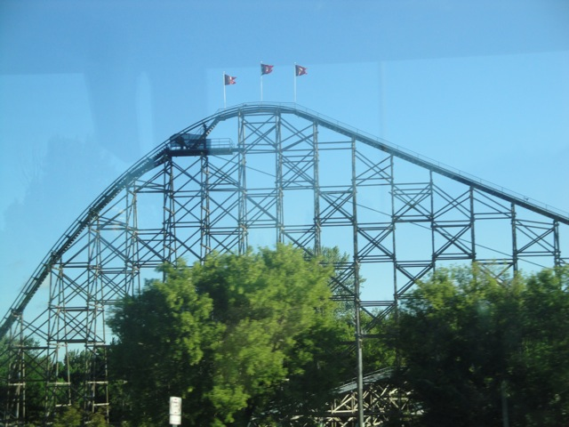
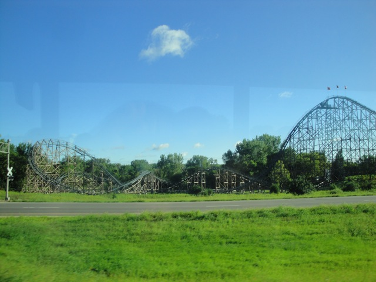

| |
Excalibur Review

We're here at Valleyfair. Today. we'll be reviewing Excalibur. This is a very odd coaster. It's built by Arrow and I guess its supposed to be a mine train. In some senses, its like one with its trains and track. But that's about it. The ride does no mine train like things, and compared to other mine trains, IT'S HUGE!!!! It's about 100 ft tall, so its average sized by ordinary coaster standards. But I'm still not sure if this is supposed to be a monster mine train or a funky Arrow Coaster. All right. After getting in the cars and pulling down the lap bar, we're off!!! We roll down a dip and around a turn that leads us straight to the lift hill. The lifthill is nothing special with just a view of the freeway. Such eye candy!!! Cause freeways are f*cking interesting!!!!!! =) All right, after that boring climb, we reach the top of the lifthill where we get a good look at the twisted mess of track that we're about to endure. We then go down the first drop. Unfortunetly, there are trim brakes on the first drop that do take away some speed. LAME!!!! =( But it's still going at a decent speed at the bottom of the first drop. We then go through some straight track in the dirt, racing up towards the upward spiral. And we're here. The Upward Spiral. We spiral up, get some decent laterals and HOLD ON A SECOND!!!! WHAT THE HELL HAPPENED TO THE TRACK!!!! We went from Arrow Mine Train track to this thick bulky Premier style track. And once we reach the top of this spiral and we stop getting laterals, we're back to Arrow Mine Train track. Ok, I normally don't care about this kind of stuff like some enthusiasts who will actively Ooh and Ahh about how Millenium Force goes from triangular track to cubic track etc. But this is pretty strange. Just one contributing factor to making this Frankenstein the Ride. We then head down another spiral drop, leaning in and getting some laterals and speed. After that fun, we head into a banked turn towards the ground. The transition isn't exactly smooth here and you get some jerky laterals. But hey. I like that. =) The turn towards the ground is nothing special, though it is close. Close enough to where it feels like you can scoop up some dirt in your hands before you rise up into a small hill. The hill has no airtime, but we do get another look at Minnesota's AMAZING FREEWAYS!!!!! We then go down a small spiral drop, getting more speed and clunky laterals. We then go up another spiral up, getting some good headchoppers under the supports. We then drop back down before rising up a hill that seems to suck ALL of the speed out of us. This may seem like the end due to all the speed lost, but nope. We then go down another clunky spiral drop and rise up. NOW its the end of the ride and we come gliding into the final brakes, before we wind around a few turns back to the station. Yeah, Excalibur is a very weird and interesting ride. It's by no means a great ride, but its just so weird and clunky, that its just fun. There's really not much like it. If what I described sounds unpleasent, you probably won't care for Excalibur. But I'd definetly recommend riding it. It may not be great, but it is a lot of fun and sure is unique.
7/10
Location: Valleyfair
Opened: 1989
Built by: Arrow
Last Ridden: August 15, 2010
Excalibur Photos


|